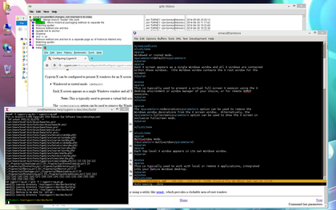
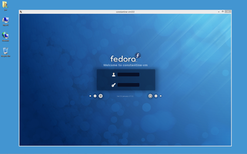
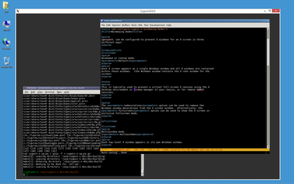

Cygwin/X can be configured to present X windows for an X screen in three different ways:
Multiwindow mode.
(-multiwindow option)
Each top-level X window appears in its own Windows window.
Note: This is typically used to work with local or remote X applications, integrated into your native Windows desktop, e.g.:

X applications (emacs, gitk and xterm) and Windows applications (explorer and firefox) in multiwindow mode
Windowed or rooted mode. (default)
Each X screen appears as a single Windows window and all X windows are contained within those windows. (the Windows window contains the X root window for the screen)
Note: This is typically used to present a virtual full-screen X session using the X desktop environment or window manager of your choice, or for remote XDMCP sessions, e.g.:

An XDMCP session to a remote Fedora host

xfce4-terminal and emacs under the Openbox window manager in windowed mode
The -nodecoration option can be used to remove
the Windows window decorations from the X screen window. Alternatively,
the -fullscreen option can be used to show the X
screen in exclusive fullscreen mode.
Rootless mode.
(-rootless option)
The X root window is hidden from view, but top-level X windows are drawn.
Note: This is typically used to work with local or remote X applications, integrated into your native Windows desktop, but controlled using the X window manager of your choice.
Because the X root window is hidden in this mode, this is not particulaly useful with X window managers with which you need to interact with the root window (for example, clicking on the root window to get a menu listing programs you can launch) [1] , but is more useful with X window managers which work with a dock or panel window for selecting applications from.
Also note that the X window manager has no knowledge of the stacking of Windows windows, and vice versa, so raising one X window above a Windows window raises all of the X windows, and raising one Windows window above an X window raises it above all of the X windows. Exactly as if all X windows were being drawn into a hidden Windows window :-)
| [1] | Although this can be worked around, to some extent, by using a utility like xroot , which provides a clickable area of root window. |